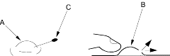

- This procedure is a general description of the door channel tape replacement process. For details about installation, front door outer channel tape (see page 20-165) and rear door outer channel tape (see page 20-166).
- Keep dust away from the working area.
- When working at lower temperatures, heat the door channel and door channel tape with a hair dryer.
- Door channel: about 15°C (59° F).
- Door channel tape: about 30°C (86°F).
- When heating the door channel tape, heat it evenly and gradually to prevent deformation.
- When pressing the door channel tape, slowly press it from the corner to prevent air bubbles and wrinkles.
- If there are air bubbles (A) in the door channel tape (B), prick them with a pin (C), then release the air with your finger or a plastic squeegee.
- If the air bubble is more than 10 mm (0.4 in.) in diameter, peel up the door channel tape, then reapply it.

- The following tools are required to replace the door channel tape:
- Plastic squeegee
- Alcohol
- Sponge or Shop towel
- Hair dryer
- Pin
- Remove these items:
Front door outer channel tape replacement
- Power mirror (see page 20-170)
- Door glass outer weatherstrip (see page 20-151)
- Glass run channel, as necessary (see page 20-140)
- weatherstrip (see page 20-151)
Rear door outer channel tape replacement
- Rear pillar trim (see page 20-160)
- Glass run channel, as necessary (see page 20-142)
- Door weatherstrip (see page 20-161)
- Centre seal (see page 20-161)
- Slowly peel up the old door channel tape while heating it with a hair dryer.
- Clean the door channel bonding surface with a sponge dampened in alcohol. After cleaning, keep oil, grease and water from getting on the surface.
- Attach the door channel tape:
- Peel the edge of the adhesive backing from the channel tape.
- Fit the door channel tape to the door channel.
- Apply the door channel tape to the door channel while peeling the adhesive backing from it a little at a time. Check that the channel tape is parallel with the door channel.
- Push firmly on the door channel tape with a plastic squeegee (felt side).
NOTE: To prevent air bubbles, slowly press the door channel tape around the door frame corner.
- As necessary, repeat the preceding steps.
- Reinstall all remaining removed parts.
- Check that the body colour on the door channel is covered by the door channel tape.
- Check for water leaks (see step 7 on page 20-163).